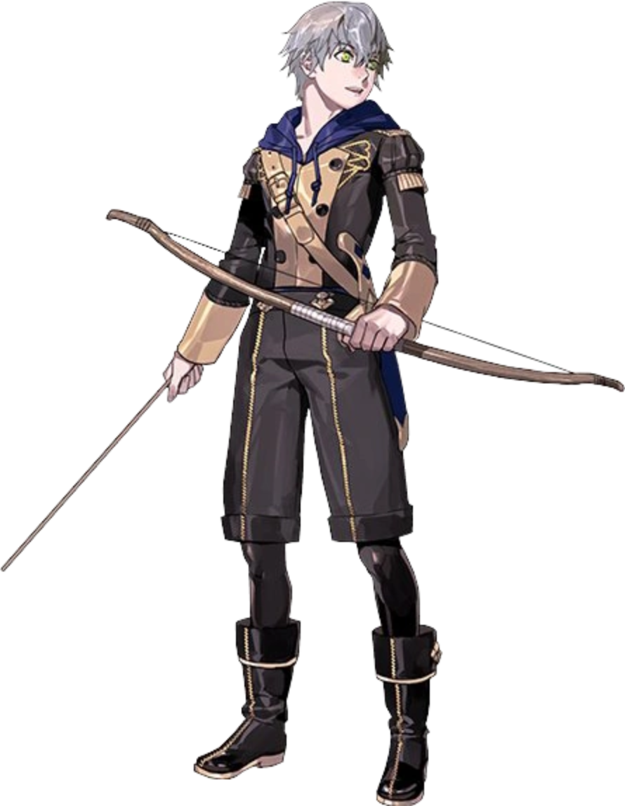

Biography Ashe Ubert is a student of the Blue Lions house at Garreg Mach Monastery and the adopted son of Lord Lonato. Born into poverty, Ashe survived by stealing to support himself and his younger siblings before being taken in by Lonato, who gave him a home and the opportunity to pursue a better life. Inspired by tales of honorable knights and the kindness shown to him by his adoptive family, Ashe dreams of becoming a knight who protects those in need.
Personality Kind, humble, and optimistic, Ashe is one of the most approachable members of the Blue Lions. He is eager to learn and always strives to improve himself, often looking for ways to help those around him. Although he can be somewhat naïve, Ashe's compassion and strong moral compass make him a dependable friend. His admiration for chivalry and justice influences many of his decisions throughout the story as he works to live up to the ideals of the knights he respects.
Role in the Blue Lions Route Ashe's story explores the meaning of justice, loyalty, and personal conviction. Throughout the Blue Lions route, he is forced to confront difficult situations that challenge the beliefs he has held since childhood. These experiences encourage Ashe to grow beyond his idealized view of knighthood and develop his own understanding of what it truly means to protect others. His journey reflects the broader themes of responsibility and personal growth found throughout the Blue Lions storyline.
Relationships Ashe shares close friendships with the members of the Blue Lions, who encourage his growth and support his dream of becoming a knight. His adoptive father, Lord Lonato, remains one of the most influential figures in his life, shaping his values and aspirations. Through his support conversations, Ashe forms meaningful relationships with classmates from across Fódlan, often bonding over shared interests, acts of kindness, and his love of stories about legendary heroes.